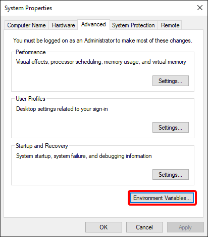
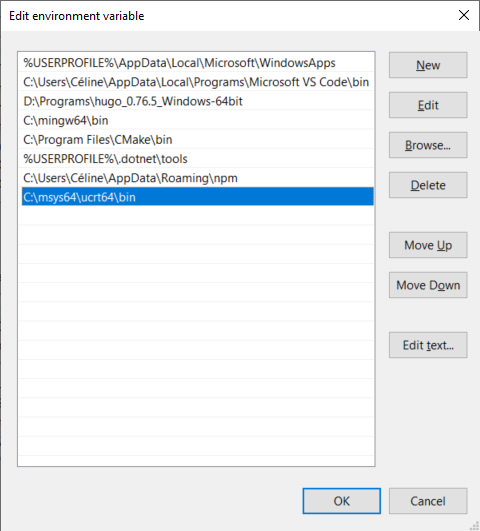
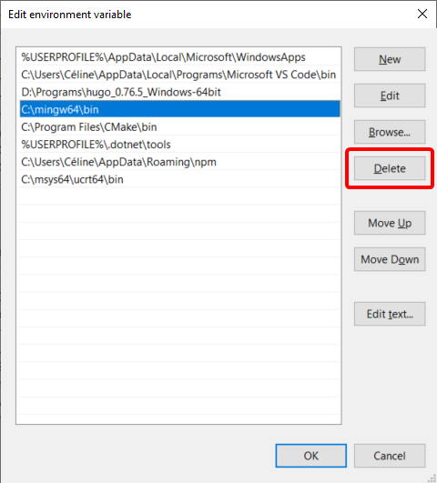
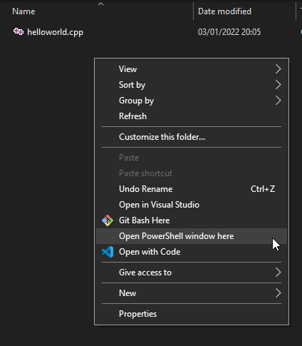

Compilateur
Pour le compilateur, vous devrez utiliser g++ (version >= 9) si vous êtes sous Windows ou Linux, et clang si vous êtes sous MacOS.
Windows
- Ouvrez un terminal et exécutez
g++ -v. Si la commande réussit, assurez-vous que la dernière ligne indique bien une version de gcc >= 9. - Si ce n’est pas le cas, installez le gestionnaire de paquet MSYS2 en suivant les instructions sur
cette page.
MSYS2 contient en particulier MinGW, qui est l’équivalent du compilateur gcc/g++ pour Windows. - A la fin de l’installation, réouvrez le terminal MSYS2 UCRT64 si vous l’avez fermé, et installez les paquets
gccetgdbavec les instructions :pacman -S mingw-w64-ucrt-x86_64-gcc pacman -S mingw-w64-ucrt-x86_64-gdb - Ouvrez l’éditeur de variables d’environnement Windows.

- Dans la variable
Path(utilisateur ou système, peu importe), ajoutez"C:\msys64\ucrt64\bin".
- Si vous aviez une autre version de MinGW d’installée (en général dans C:\mingw), c’est très important que vous supprimiez son répertoire bin/ du
Pathutilisateur et duPathsystème.
- Ouvrez un terminal Window et exécutez
g++ -v
La dernière ligne devrait maintenant indiquer une version de gcc >= 9.
Testez maintenant que tout fonctionne en suivant les étapes ci-dessous.
- Téléchargez ce fichier.
- Ouvrez une fenêtre Powershell dans le répertoire contenant le fichier (vous pouvez utiliser
Shift + Clic Droitdepuis l’explorateur de fichiers pour faire apparaître l’option dans le menu contextuel).
- Exécutez la commande
g++ helloworld.cpp -o hello
Un fichierhellodevrait avoir été généré. - Exécutez
.\hello. Le programme devrait vous répondre"Hello!".
Linux
- Ouvrez un terminal et exécutez
g++ -v. Assurez-vous que la dernière ligne indique bien une version de gcc >= 9. - Si ce n’est pas le cas, mettez à jour vos paquets à l’aide de votre gestionnaire de paquets (
sudo apt-get updatesous Debian) et vérifiez à nouveau la version de g++. - Si ce n’est toujours pas le cas, vous allez avoir besoin de mettre à jour votre système. Sur Debian, cela se fait avec
sudo apt-get upgrade, mais renseignez-vous avant de faire n’importe quoi avec votre machine…
Vérifiez une nouvelle fois que votre g++ est bien à jour.
Testez maintenant que tout fonctionne en suivant les étapes ci-dessous.
- Téléchargez ce fichier.
- Ouvrez un terminal et placez-vous dans le répertoire contenant le fichier téléchargé :
cd path/to/folder - Exécutez la commande
g++ ./helloworld.cpp -o hello
Un fichierhellodevrait avoir été généré. - Exécutez
./hello. Le programme devrait vous répondre"Hello!".
MacOS
- Ouvrez un terminal et exécutez
clang --version - Si la commande échoue, installez clang en exécutant
xcode-select --install
Testez maintenant que tout fonctionne en suivant les étapes ci-dessous.
- Téléchargez ce fichier.
- Ouvrez un terminal et placez-vous dans le répertoire contenant le fichier téléchargé :
cd path/to/folder - Exécutez la commande
clang++ ./helloworld.cpp -o hello
Un fichierhellodevrait avoir été généré. - Exécutez
./hello. Le programme devrait vous répondre"Hello!".
Options g++ et clang++
Si vous compilez via le terminal ou avec Compiler Explorer, nous vous conseillons d’utiliser les options ci-dessous, car nous les activerons pour vos rendus de projet :
-std=c++17: spécifie que le projet sera compilé en C++17 (sans cette option, certains fichiers peuvent ne pas compiler)-Wall -W: permet d’activer un certain nombre de warnings-Werror: transforme les warnings en erreurs, donc tant qu’il y a des warnings, le programme ne compile pas
Sachez par ailleurs que vous pouvez également utiliser :
-g: ajoute des informations supplémentaires à l’exécutable, afin de pouvoir le débugger plus facilement